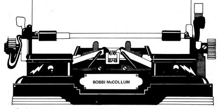

Several months ago, I launched a home typing business based on Gail Williams' article in MOTHER NO. 25 and when I wrote MOTHER (NO. 31, pg. 128) with an offer to help others get started in the field, I received such an onslaught of letters that I've put together the following notes in self-defense. My remarks are a composite of Gail's tips, my own experience, observations by other typists, and the answers to some questions posed by my respondents. (Many of those who contacted me were relatively new subscribers and hadn't seen the Williams piece which I strongly recommend that anyone interested in this work at home business should read.)
You'll be paid for home typing by the page or by the line and the faster you work, of course, the higher your "hourly" earnings will be. Most experienced transcribers hit 80 to 100 words per minute. If you're now plugging along at 40, though don't despair. A few months of six to eight hours per day at the keyboard will bring your speed up. just be sure your accuracy keeps step! Flying fingers mean nothing if you constantly drop out small words or need to make corrections every few pages.
Much home typing is done from dictation and if you've never tackled transcription, it's not difficult to learn. This skill, like any other, is built by practice. Simply rent a typewriter, sit down with your back to the television, and pound away as your favorite newscaster talks. If you're unfamiliar with dictating equipment, libraries contain books on the use of business machines.
Before you make a heavy investment in equipment, it's a good idea to rent the basics while you determine whether or not you like typing at home enough to make a business of it. If you do buy a typewriter later on, don't let anyone talk you into "economizing" with a portable or a manual they just won't turn out work that measures up to professional standards. What you want is a full size, electric, office typewriter. I started with an Adler "C" model (which I still have), but prefer the IBM Electric most of all because of its lack of vibration and its interchangeable type styles.
A service contract on whatever typewriter you finally buy will cost slightly more than repair calls initially but will save you a lot of money in the long run. And, whenever your machine will be down for service, notify your clients of the fact and don't take on any jobs in the meantime unless you can get a loaner that's identical to your own model. If you have to make modifications in the work later on, you can't very well borrow the temporary replacement just for that purpose!
In my experience, all legal typing must be done on a machine with standard pica type, 10 digits to the inch. Gail Williams, who works for court reporters in the Dallas area, suggests a nine-pitch modification (nine characters to the horizontal inch) in localities where this is permitted, since fewer words per page mean a better rate for the typist. None of the deposition services around Los Angeles, however, use anything but a 10-pitch machine.
Standard pica type is also necessary for most thesis and dissertation work. However, certain universities (Brigham Young in Utah, for one) now find that the increased numbers of such documents, and the space needed to store them, are making the smaller "elite" type increasingly desirable. If you do use elite type, adjust your fees accordingly to compensate for the additional words per page.
Ms. Williams' article in MOTHER NO. 25 also mentions the need for a "five-line ratchet" and when I threw that term at my business machine serviceman, he just looked blank. Gail is right, though: There is such a thing, and it's a necessity for legal and scholarly work. What the gadget does is enable you to half-space for the placement of such figures as degree marks and coefficients. My machine like many others came equipped with this extra, but if your lacks the capability it's an easy modification to make.
Another special feature you'll need for thesis typing is square brackets but if your typewriter doesn't have such characters, most schools will accept the marks when they're carefully hand drawn in black India ink. The same goes for certain mathematical symbols, such as the square root sign.
The only dictating machine I've encountered and it seems pretty universal is the Stenorette. Although an older, used unit can be purchased for anywhere from $25.00 to $150, I preferred to buy a new one (which is the only model with a variable speed control). This slows the rate of playback and is more than worth the additional investment every time you run into a client with an unfamiliar accent, lousy speaking technique, or poor manners. A couple of persons I've typed for, for instance, do their dictating during lunch or dinner and a phrase like "multiple abrasions, lacerations, and contusions" comes across badly at best when mixed with a mouthful of mashed potatoes. If you can't slow the playback speed, such material is hopeless to transcribe.
I started out working on two TV trays and the arm of the couch, and I have just one word for that routine: DON'T! Find yourself a quiet, out-of-the-way corner, establish it as yours, and guard it fiercely. Typewriters are sturdy pieces of equipment, but constantly moving one from place to place is bound to cause problems.
I spent $100 on a sort of stand up bookcase (new) with a foldout table for my typewriter and two shelves behind closable doors that keep stationery both out of sight and clean. Various small organizers-which you can make by, for instance, inserting dividers into boxes-will add to the neatness of your work space. Use them for convenient storage of a good supply of typewriter ribbons, erasers, paper clips, rubberbands, manila folders, Type cleaner, etc. And don't let tax forms, important papers, bills, coffee cups, catalogs, and the like clutter your typing area!
Remember, too, that you won't be able to type for very long with a sore back and aching shoulder blades. You'll need a decent chair, but it doesn't have to be an expensive one. I bought mine used, from a junk store, for $5.00.
Reference books are time and work savers, and their cost is tax deductible. Keep a dependable almanac, dictionary, telephone directory, area map, and zip code book on hand.
If you're working for physicians or court reporters, you'll also need some help with medical terms. Syllabus for the Surgeon's Secretary by J.A. Szulec (Medical Arts Publishing, Detroit, Michigan, 1969) is a good all-around reference, and I can recommend either Taber's Cyclopedic Medical Dictionary (12th edition edited by Clayton L. Thomas, F.A. Davis Co., Philadelphia, Pa., 1973, $9.50) or Dorland's Illustrated Medical Dictionary by William A. Dorland (W.B. Saunders Co., Philadelphia, Pa., 1965, regular edition $13.50, deluxe edition $17.00). Another useful guide-Physician's Desk Reference (PDR)-is a manual provided annually to the medical profession which lists drugs under various classifications. Ask your doctor for his last year's copy.
Advertising will help you build your business but there's no need to go overboard. A well-placed business card (as Gail has suggested, you can type up your own on 3" X 5" file cards which are both less expensive than "regular" printed business cards and don't get lost so easily) will attract as many clients as an ad in the middle of a large newspaper's classified section. Letters and phone calls to likely prospects also give good results.
If you want to zero in on Ms. Williams' specialty legal typing you'll find court reporters and deposition services listed under "Reporters" in the Yellow Pages of the telephone directory (or the clerk of your local court can tell you how to get in touch with them).
A word of caution regarding the legal field: Some court reporters and deposition services have an annoying habit of not paying their typists until their clients pay them. If both attorneys involved in a case want a copy of the record, your payment for the second carbon isn't always guaranteed nor is the fee for the work you do on a cross-examination, if any. The problem is that the firm which originally hired the reporter isn't always willing to pay for the transcription of the adversary's questions. When you do collect your money, however, you can expect around here to average 50d a page (considerably better than the 30 paid in Gail's parts).
Another possibility for the home typist is to work for a secretarial service (also listed in the Yellow Pages). Such firms usually offer around-the-clock transcription to law firms, physicians, psychiatrists, and large businesses. Normally they'll deliver and pick up your jobs and some also provide typewriters, Stenorettes, ribbons, erasers, stationery, and typing paper. They don't pay ,quite as well as court reporters but are easier to work for, get their checks out bi-weekly, and deal with material which is less boring than depositions. Incidentally, if your clients don't pick up and deliver and they're located some distance from where you live, try UPS. For $2.00 a week a messenger will come by your house daily Monday through Friday, the service takes only 24 hours door to door, nothing ever gets lost, and the cost is tax deductible. just contact the nearest United Parcel Service office it's listed in the phone directory. (There's nothing like working through the post office to make you appreciate UPS. I once made the mistake of mailing a finished job and it took three weeks to go 50 miles.)
If you're experienced in medical terminology-and this isn't something you can fake-typing for psychiatrists and law firms that handle personal injury cases can be very profitable. Since most typists can't or won't handle such work, the specialty is well paid.
Being a nurse, I sort of fell into my favorite job: typing for a psychiatrist who dealt with personal injury cases going into litigation. He turned out to be a model employer, who both asked for my preferences regarding dictation technique and then conformed to those guidelines. What a sweetheart! He spelled all names twice (once on the tape and once on a written form accompanying each job), made most of his own corrections or paid me extra to do them, rarely sent rush jobs, didn't care if the copy was verbatim (depositions, in contrast, must be totally accurate to dictation, down to a's, nd's, and the's) and handled very interesting cases. He also furnished me with a typewriter, ribbons, stationery, erasers, and paper clips, and all work was delivered and picked up by his service. The money was good, the typing was easy, and I really enjoyed the whole experience.
I should mention that few dictators are as nearly perfect as that doctor. If you come across something incomprehensible either on a tape or in written copy-don't hesitate to call your client and ask questions. I've never been snapped at for doing so and even if you are, it's better than guessing wrong and having to retype a page.
If you live near a university, registration with the graduate student office will net you thesis and dissertation work which can be very profitable. A highly experienced thesis typist I know gets 750 per page for straight copy and $1.30 each for tables. To qualify for that kind of money, however, you must be a grammatical expert and know all the various forms for theses, bibliographies, and the like. (In any case, you should familiarize yourself with some of the more popular styles: Campbell's, Turabian's, and the American Psychiatric Association's, for instance.)
Every college and university has a list of specific requirements for a proposed study: style of type, table and appendix format, enumeration procedures, margins, bibliographical conventions, and overall arrangement. Ask the students you type for to furnish you with a copy of these directions for your reference.
Another requirement for such scholastic works is that they must be done on special paper, usually of 20-pound weight and 50 percent rag content. The larger universities carry the necessary stock. (Since the paper is frequently imprinted with the institution's watermark, however, be sure you're furnished with enough for all corrections and the final draft.)
Thesis copy (which may be handwritten) is generally not too difficult to handle. Unless you're a well-organized person, however, the work can be a pain in the neck. You should know before you begin that a supervisory committee will read each draft, make critiques, and demand corrections and you'll have to type and retype all the successive versions. It's important to make a note of margin settings, table style, and any peculiarities of a given job, and keep all this information together until the student notifies you that he's really and truly finished. I had no idea what I was getting into on my first attempt, and spent a lot of time redoing tables that didn't maintain the required continuity of the study.
Yet an additional hang up with theses is the fact that the candidate for an advanced degree may be working against time. I remember one occasion when I promised to complete a "small section" originally supposed to be less than 80 page sin 48 hours. No sweat, right? Wrong! The job turned out to be closer to 180 pages, including a totally unstructured bibliography, and I typed for 36 hours straight. The $10.00 bonus I collected was small payment for four days' recuperation in bed while a backlog of other clients' work built up. Moral: See the manuscript before you commit yourself, and don't promise what isn't feasible. Your two biggest responsibilities as a typist are accuracy and meeting deadlines. If you can't finish the work, don't take on the job.
There's one more point you should know about academic typing: A graduate student who is doing his Ph.D. for an out-of-town university will have to travel there to take his orals (a requirement for the completion of the doctorate). Because he may have to make last-minute corrections in his dissertation during that period, he'll be provided with the names and addresses of secretaries near the school along with a note of what typewriter and type style each one uses. Be sure to go over the list with your client and point out which typists have machines identical to yours, so that any late changes will match the work you've already done.
Clients vary somewhat in their handling of deductions and suchlike. Both the deposition services I worked for withheld FICA (social security) from my checks, for instance, while the secretarial service and the doctor didn't. All, however, sent me W-2 forms at the end of the year. (See Gail's article in MOTHER NO. 25 for some notes on how to be a self employed taxpayer.)
It's essential to keep careful financial records and to hang on to the receipts for all supplies. Note that-while you can't deduct the total purchase price of things like typewriters in one year-you can allow for depreciation over a number of years.
Above all, don't be too proud to get help with this matter. I was a bookkeeper for five years, but I still don't do my own taxes. It's worth the $20.00 fee to collaborate with a professional.
Good luck to all of you who enter the growing field of home typing and never forget that you're offering a valuable service. Your clients are getting a real break every time you deliver a neatly typed job without any accompanying worry about upkeep of office equipment, sick leave, paid holidays or vacations, personality differences (I've met face to face only one of the people I've typed for), unions, coffee and lunch break scheduling, and all the other headaches that walk in the door with an office staff. Your service if done .well-is worth every penny you charge.
|
 |
|
|